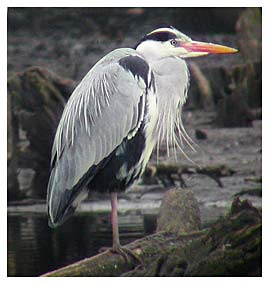

Grey Heron
A common bird to the reservoir & breeds nearby. Large counts have occurred at the southern end in winter & late in the breeding season.

Pre '90's - Maximum of 6 on many dates (DEP)
02/09/91 - 5 birds. 1 landed on the water, caught & ate a fish, before flying off once more
18.08.94 - 6 birds
08/08/95 - 14 birds
28/01/96 - 6 birds
24/07/97 - 25 birds
02/08/97 - 29 birds
22/09/97 - 31 birds. Record count (KGH). Bizarrely exceeded by the record count of Little Egrets (32) in 2006 and even more Little Egrets (43) in 2017
14/12/97 - 15 birds
02/01/98 - 18 birds
10/02/98 - 14 birds
06/09/98 - 30 birds
??/08/99 - Maximum count of 26 birds
22/01/00 - 17 birds
20/08/01 - 9 birds
03/08/02 - 9 birds
05/08/03 - 7 birds
21/02/04 - 7 birds
23/08/05 - 7 birds
28/01/06 - 5 birds
09/08/07 - 9 birds mainly immatures (also 1-3 throughout the year)
2008 - Usually 1 bird present all year, sometimes 2, occasionally 3 with 4 on 22/07/08 and 01/09/08
2009 - Usually 1-3 birds with maximum 6 birds on 15/08
2010 - Usually 1 or 2 birds, occasionally up to 4, and 6 birds on 01/08 and 16/12
2011 - recorded on 219 dates with usually 1-4 birds. 5 on 07/09 and 9 on 16/09
2012 - recorded on 218 dates with usually 1-4 birds. 8 on 30/08 and 7 on dates in August and February
2013 - recorded on 214 dates with usually 1-4 birds. Up to 7 in August
2014 - recorded on 181 dates with usually 1-4 birds. Up to 6 on 3 dates in September
2015 - recorded on 210 dates with usually 1-3 birds. Maximum 10 on 29/09
2016 - recorded on 200 dates with 1-4 birds
2017 - recorded on 185 dates with 1-4 birds
2018 - recorded on 148 dates with max 5 on 30/08
2019 - recorded on 176 dates with max 4 on 25/08
2020 - recorded on 206 dates with max of 5 on 19/08
2021 - recorded on 207 dates with 1-4 birds
2022 - recorded on 219 dates with 1-6 birds. Highest counts in August and September
2023 - recorded on 247 dates with 1-4 birds. Highest counts in August, September and October
2024 - recorded on 295 dates with up to 3 birds in the first half of the year and up to 4 in the second half
2025 - recorded on 263 dates with max of 5 birds on 09/08